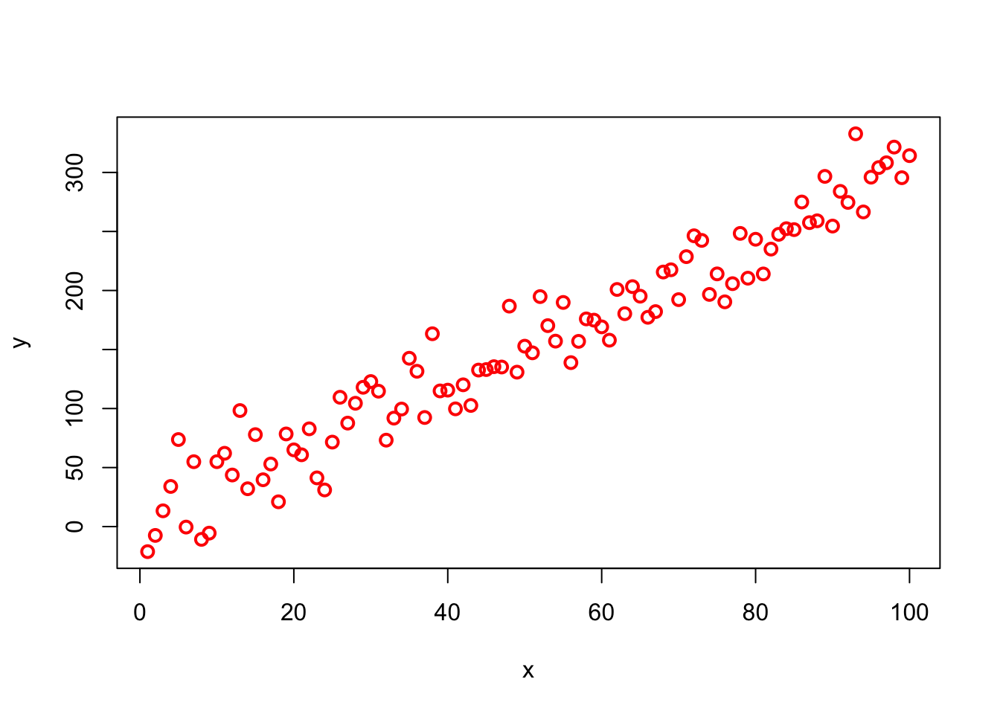
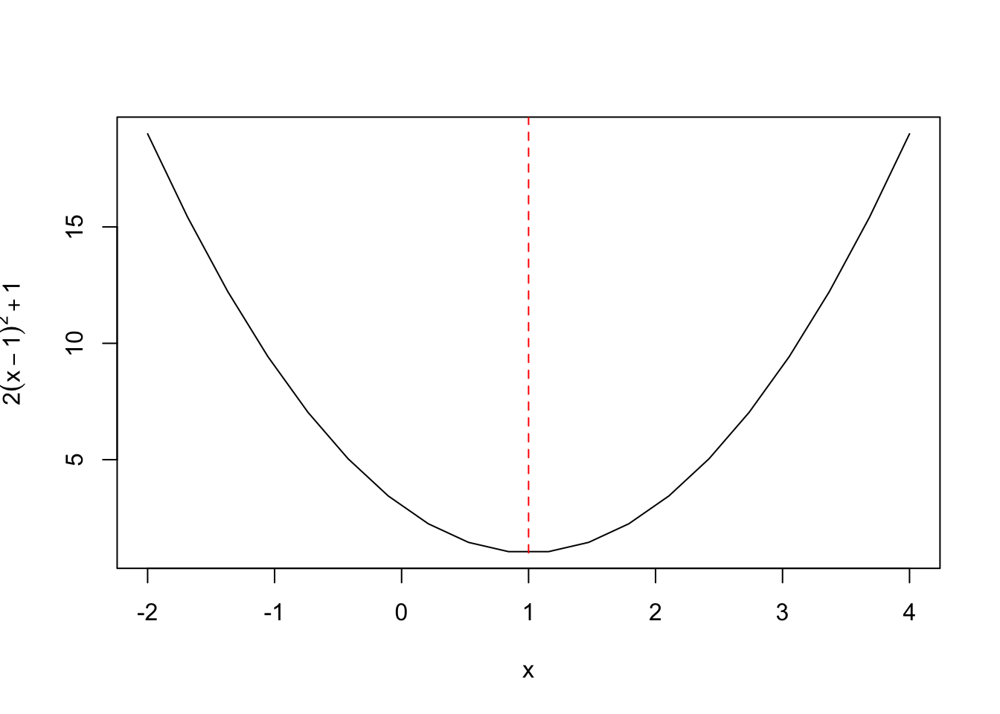
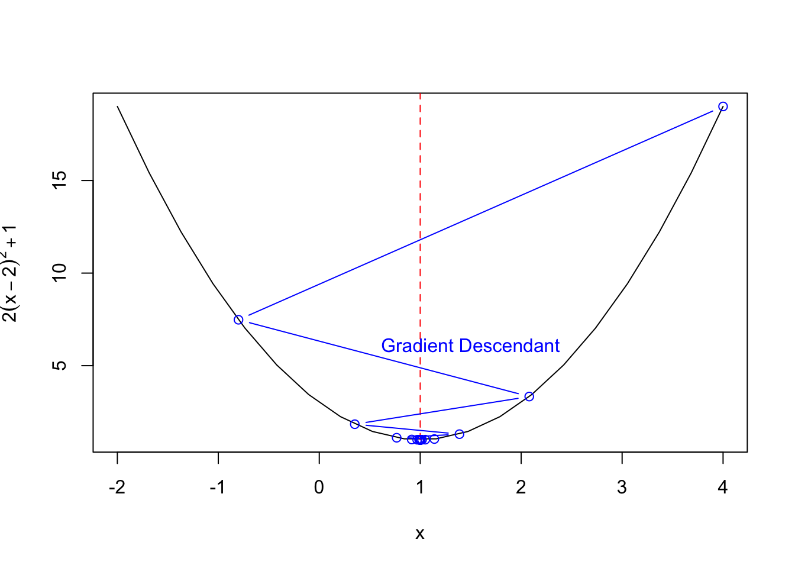
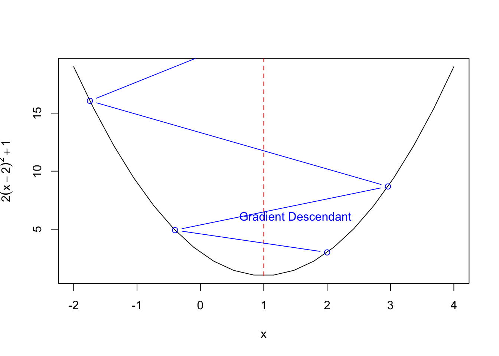
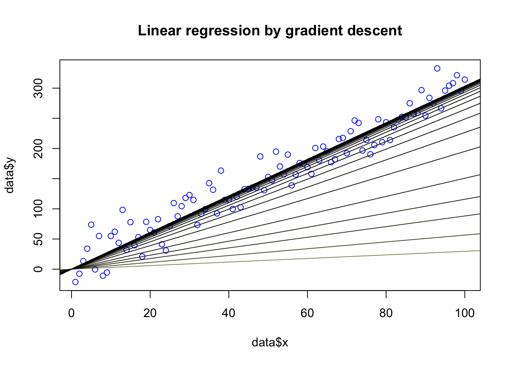
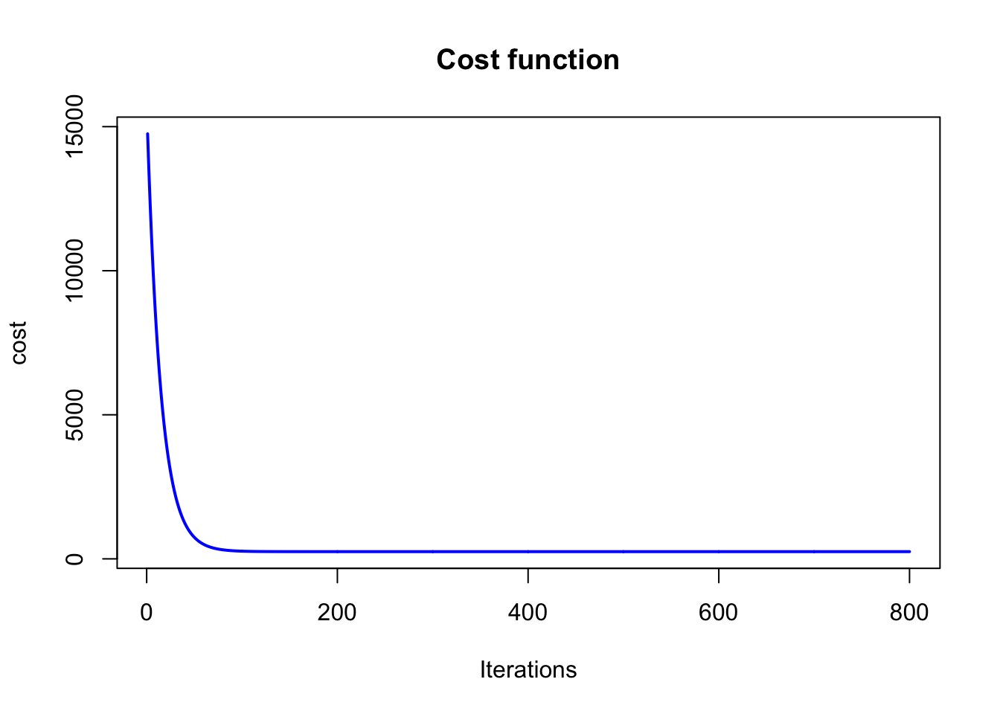

Dans cet exercice, on va implémenter la régression linéaire avec R.
On peut visualiser les données à modéliser :

On cherche à exprimer \(y\) en fonction de \(x\) de façon linéaire, autrement dit on cherche une fonction \(h_\theta\) est donnée par :
\[y=h_\theta(X)=\theta^TX=\theta_0+\theta_1x\]
On peut appliquer la fonction lm (comme linear model) pour avoir les résultats:
##
## Call:
## lm(formula = data$y ~ data$x)
##
## Residuals:
## Min 1Q Median 3Q Max
## -44.749 -16.417 -2.391 15.884 55.065
##
## Coefficients:
## Estimate Std. Error t value Pr(>|t|)
## (Intercept) 4.76247 4.53376 1.05 0.296
## data$x 2.95917 0.07794 37.97 <2e-16 ***
## ---
## Signif. codes: 0 '***' 0.001 '**' 0.01 '*' 0.05 '.' 0.1 ' ' 1
##
## Residual standard error: 22.5 on 98 degrees of freedom
## Multiple R-squared: 0.9363, Adjusted R-squared: 0.9357
## F-statistic: 1441 on 1 and 98 DF, p-value: < 2.2e-16L’équation : \[y=h_\theta(X)=\theta^TX=\theta_0+\theta_1x\]
peut se résout de façon analytique:
\[\hat\theta=(X^TX)^{-1}X^Ty\]
Un exemple simple d’optimisation par gradient descendant: trouver le minimum d’une fonction parabolique:
\[y=2(x-1)^2+1\]


En pratique, on doit faire attention au choix du pas: il faut qu’il soit “assez petit”, pour que ça converge. Si le pas est trop grand, il peut y avoir divergence:

L’objectif de la régression linéaire est de miniser la fonction de coût suivante:
\[J(\theta)=\frac{1}{2m}\sum_{i=1}^m(h_\theta(x_i)-y_i)^2\]

## Warning in plot.xy(xy, type, ...): le type de graphe 'line' sera tronqué au
## premier caractère
Copyright © 2016 Blog de Kezhan Shi